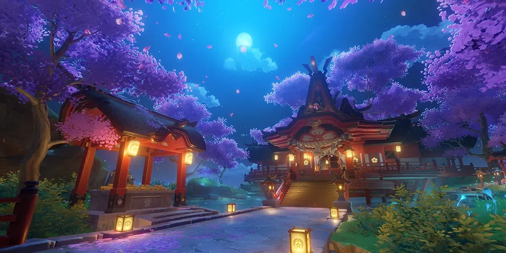
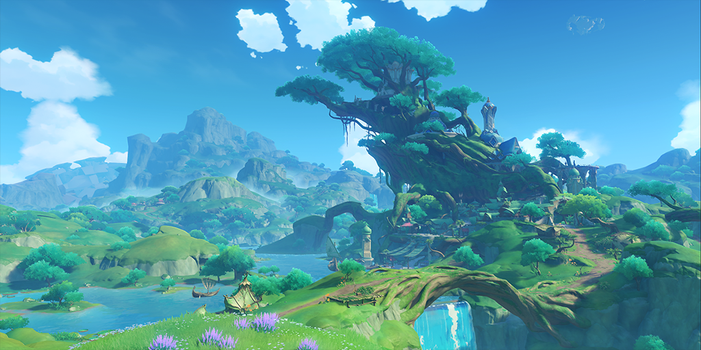
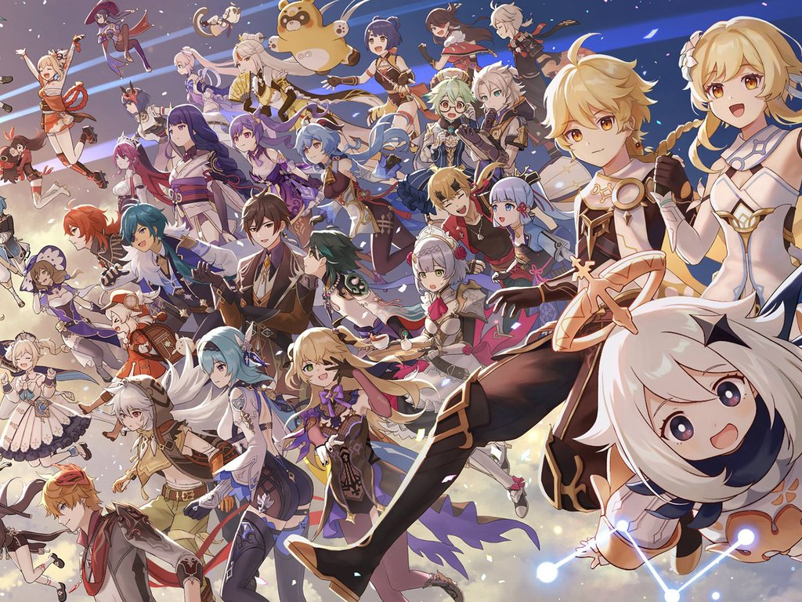
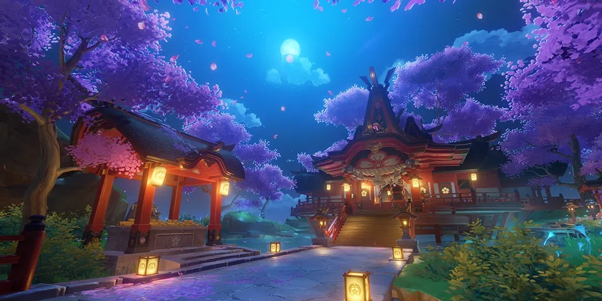
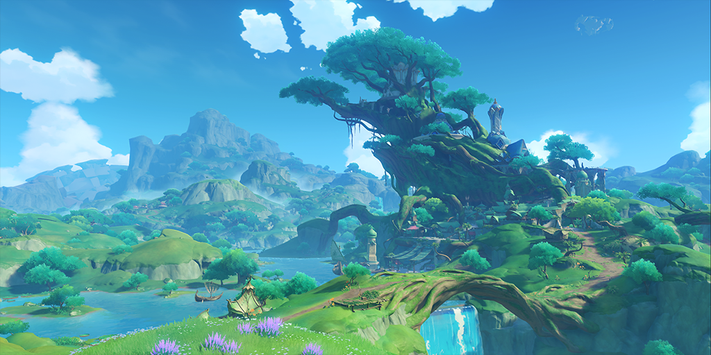
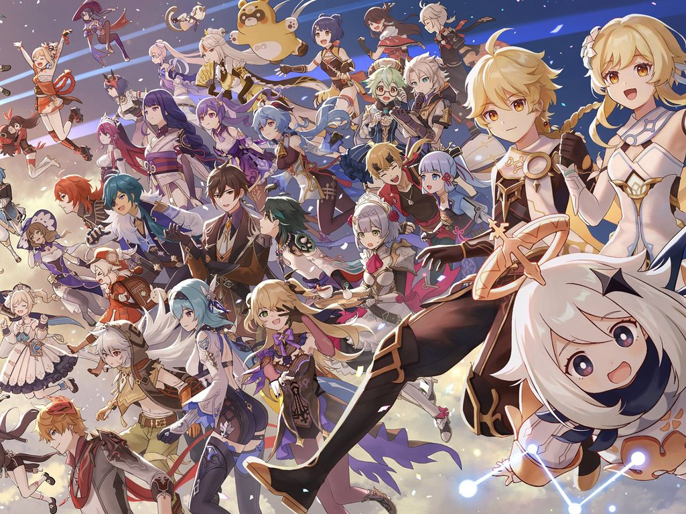

製作公司
遊戲公司「米哈遊」在最一開始是由三個喜歡玩遊戲的宅男組成的。
而他們的宗旨就像logo上寫的一樣：宅男拯救世界。
米哈遊其他的作品包括「崩壞系列」和「絕區零」等等。
遊戲類型
原神是一款開放世界冒險遊戲。遊戲發生在一個叫做「提瓦特」的幻想世界。
在裡面，玩家可以自由決定遊戲方式：解任務、升級角色、探索世界...。
並且原神不像其他競技遊戲，它沒有所謂的排行榜或是排位賽，所以玩家可以真正沉浸在遊戲的劇情和世界觀裡。